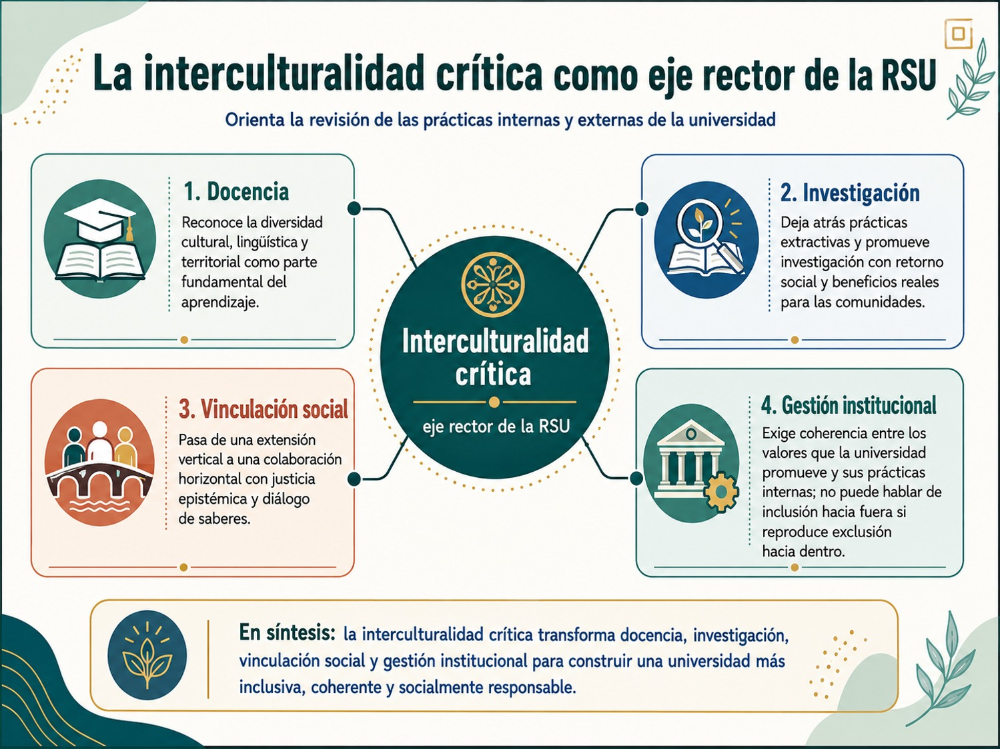

La interculturalidad crítica como eje rector de la RSU implica comprender que la universidad no debe relacionarse con la sociedad desde una posición neutral, vertical o asistencialista. La universidad forma parte de una realidad social marcada por desigualdades económicas, culturales, lingüísticas, étnicas, territoriales y epistémicas. Por ello, su responsabilidad social no consiste en “ayudar” a la comunidad, sino en reconocer las diferencias, dialogar con los saberes diversos y transformar las condiciones que producen exclusión.
La RSU con enfoque intercultural se entiende como una forma de orientar el quehacer universitario hacia la construcción de sociedades más inclusivas y equitativas. Cerrón (2023), señala que la interculturalidad se relaciona con el diálogo respetuoso entre culturas, la valoración de la diversidad y la participación activa de los distintos actores sociales en las acciones de responsabilidad universitaria. De este modo, la integración del enfoque intercultural en la RSU no aparece solo como un compromiso ético, sino también como una estrategia para avanzar hacia una sociedad más justa, en la que las personas y comunidades sean reconocidas en su singularidad y en su contribución al bien común.
Sin embargo, hablar de interculturalidad crítica exige ir más allá de una idea superficial de diversidad. No basta con reconocer que existen distintas culturas, lenguas, identidades o cosmovisiones; tampoco basta con promover la tolerancia o la convivencia pacífica. La interculturalidad crítica supone preguntarse qué relaciones de poder atraviesan esas diferencias, qué saberes han sido históricamente legitimados por la universidad y cuáles han sido marginados, subordinados o invisibilizados. En este sentido, Walsh (2009), centrada en la interculturalidad crítica y la pedagogía decolonial, permite comprender que la interculturalidad no debe reducirse a una política funcional de inclusión, sino convertirse en una práctica político-pedagógica capaz de cuestionar la colonialidad, el racismo, la exclusión y las jerarquías del conocimiento.
Por ello, la interculturalidad crítica se convierte en eje rector de la RSU porque obliga a la universidad a revisar sus propias prácticas internas y externas, por ejemplo, hacia dentro, interpela sus planes de estudio, sus métodos de enseñanza, sus formas de evaluación, sus relaciones institucionales y sus criterios de legitimación del conocimiento y hacia fuera, transforma la relación con comunidades, pueblos originarios, organizaciones sociales, territorios y grupos históricamente excluidos. Una universidad socialmente responsable no solo debe transferir conocimiento; debe escuchar, aprender, dialogar y co-construir saberes con quienes viven los problemas sociales en su experiencia cotidiana.
Recordemos que, como lo afirma Villar (s.f), la RSU debe construirse participativamente con actores internos y externos, orientando la universidad hacia una misión ético-política vinculada con el desarrollo humano sustentable, la equidad, la inclusión social, los derechos humanos y la cultura de paz. Además, esta responsabilidad exige congruencia entre docencia, investigación, extensión y gestión, así como una cultura de observación, escucha, diagnóstico, evaluación de impactos y rendición de cuentas. La interculturalidad crítica fortalece precisamente esa dimensión, porque recuerda que no hay responsabilidad social verdadera si la universidad no atiende las voces, necesidades, memorias y saberes de los grupos con los que se vincula.
En la docencia, la interculturalidad crítica implica construir una formación universitaria capaz de reconocer la diversidad cultural, lingüística y territorial como parte fundamental del aprendizaje. Esto supone revisar los currículos para incorporar temas como derechos de los pueblos originarios, racismo, desigualdad, diálogo de saberes, memoria colectiva, justicia epistémica, sostenibilidad, cultura de paz y participación comunitaria. También implica superar la idea de que el conocimiento académico es el único conocimiento válido. Las ciencias, las tecnologías, las artes y las humanidades deben dialogar con saberes comunitarios, ancestrales, populares y territoriales para producir aprendizajes más pertinentes.
En la investigación, este enfoque exige dejar atrás prácticas extractivas, donde la universidad estudia a las comunidades sin devolver beneficios reales. Una investigación orientada por la interculturalidad crítica debe construirse con participación social, respeto a los contextos locales y reconocimiento de los sujetos como productores de conocimiento. Cerrón (2023), señala que las características sociales, culturales, lingüísticas y ambientales de las comunidades deben ser elementos vinculantes para que las acciones universitarias sean pertinentes y no afecten el legado cultural de los pueblos.
En la vinculación social, la interculturalidad crítica permite pasar de una lógica de extensión vertical a una lógica de colaboración. La universidad y cada estudiante no se colocan como autoridades externas que “llevan soluciones”, sino como parte de una red de participantes que buscan resolver problemas comunes. Esto coincide con la idea de que la comunicación intercultural no es solo transmisión de información, sino interacción orientada a la comprensión mutua y a la búsqueda de soluciones compartidas. En este punto, es importante decir que en el contexto de la RSU basada en la interculturalidad crítica, la justicia epistémica se convierte en un valor y acción esencial para ella. Por justicia epistémica se entiende al reconocimiento justo de las personas y comunidades como productoras legítimas de conocimiento y que implica cuestionar las desigualdades que hacen que ciertos saberes sean valorados como “científicos”, “válidos” o “universales”, mientras otros son ignorados, descalificados o considerados inferiores por provenir de pueblos originarios, comunidades populares, mujeres, grupos racializados o sectores históricamente excluidos. Y en el marco de RSU la justicia epistémica significa que la universidad no debe asumir que solo el conocimiento académico tiene valor, por el contrario, debe abrir espacios para el diálogo de saberes, reconocer conocimientos comunitarios, territoriales, artísticos, ancestrales y experienciales, y evitar relaciones extractivas donde la universidad estudia a las comunidades sin escucharlas ni devolver beneficios.
Por ejemplo, en el informe GUNI señala que la interculturalidad implica pasar de la coexistencia de culturas a formas de comunicación donde los otros no sean tratados como objetos, sino como participantes y socios en la solución de problemas comunes.
En lo que respecta a la gestión institucional, la interculturalidad crítica exige que la universidad sea coherente con los valores que promueve, ya que no puede hablar de inclusión hacia fuera si reproduce exclusión hacia dentro. Esto implica revisar procesos de admisión, permanencia, participación, atención a la diversidad, accesibilidad, igualdad de género, reconocimiento lingüístico, trato digno, participación estudiantil y condiciones laborales. La RSU intercultural requiere que la universidad construya espacios comunes donde estudiantes, docentes, personal administrativo y comunidades puedan compartir experiencias, conocimientos culturales y propuestas de transformación.
Cerrón (2023), propone varias líneas prácticas para integrar RSU e interculturalidad, por ejemplo, crear diagnósticos y planes de sensibilización, espacios inclusivos, diseñar currículos interculturales, realizar investigación y proyectos de responsabilidad social, hacer intercambio y cooperación internacional, realizar evaluación y seguimiento, así como llevar a cabo programas de difusión y sensibilización externa. Estas líneas permiten traducir la interculturalidad crítica en acciones concretas como identificar necesidades territoriales, promover el diálogo intercultural, incluir proyectos con comunidades diversas, evaluar impactos y construir alianzas con organizaciones locales.
En este sentido, la interculturalidad crítica también se relaciona con la utilidad social del conocimiento, que cómo hemos visto, el conocimiento universitario socialmente útil no es solo aquel que resuelve problemas técnicos, sino aquel que lo hace de manera justa, contextualizada y respetuosa de la diversidad. La utilidad social del conocimiento aumenta cuando la universidad reconoce que los problemas sociales no pueden comprenderse desde una sola mirada y que las soluciones impuestas desde fuera pueden ser inadecuadas o incluso dañinas. Por eso, la interculturalidad crítica permite que la RSU sea más pertinente, más ética y más transformadora.
En conclusión, la interculturalidad crítica como eje rector de la RSU significa orientar toda la vida universitaria hacia el reconocimiento activo de la diversidad, el diálogo de saberes, la justicia social y la transformación de las relaciones desiguales de poder. No se trata únicamente de incluir a quienes han sido excluidos dentro de una estructura ya dada, sino de transformar la propia universidad para que sus funciones formativas, científicas, tecnológicas, artísticas, humanísticas y sociales respondan a una sociedad plural. Una universidad socialmente responsable e interculturalmente crítica es aquella que aprende con los territorios, reconoce los saberes históricamente invisibilizados y convierte el conocimiento en una herramienta para construir comunidades más justas, democráticas, sostenibles e incluyentes. Observa el siguiente diagrama:

- Cerrón, Wild, Espinoza, Gladys, Herrera, Milca, Huaranga, Herbert y Ninalaya, Marino (2023). Construyendo un futuro inclusivo: la responsabilidad social universitaria en un contexto intercultural. Building an Inclusive Future: University Social Responsibility in an Intercultural Context, Zenodo.
- Walsh, Catherine (2009). Interculturalidad crítica y pedagogía de-colonial: Insurgir, re-existir y re-vivir. En Educación intercultural en América Latina.
- Memorias, horizontes históricos y disyuntivas políticas. México: UPN-Conacyt-Plaza y Valdés.
- Villar, Javier. Responsabilidad Social Universitaria: nuevos paradigmas para una educación liberadora y humanizadora de las personas y las sociedades,
- REDIVU – Red Latinoamericana de Compromiso Social y Voluntariado Universitario – Biblioteca Virtual.
Te recomendamos ver estos videos para profundizar sobre este tema:
Identificación y mapeo de grupos de interés de la universidad y estrategias de comunicación eficiente para la participación.
Desde la RSU, la identificación y mapeo de grupos de interés constituye una herramienta central para hacerla operativa con enfoque intercultural, ya que no se trata únicamente de elaborar una lista de actores vinculados con la universidad, sino de reconocer quiénes son afectados por sus decisiones, quiénes participan en sus procesos, quiénes poseen saberes relevantes y quiénes deben ser escuchados para construir acciones socialmente pertinentes.
Como hemos visto, la RSU se plantea como un proceso que debe construirse participativamente con actores internos y externos, es decir, con los distintos grupos que se relacionan con la universidad. Villar (s.f), señala que cada universidad debe construir su concepto de RSU mediante un proceso participativo de actores internos y externos, considerando además la observación, la escucha, el diagnóstico, la evaluación de impactos y la rendición de cuentas. Desde esta lógica, el mapeo de grupos de interés no es un requisito administrativo, sino una condición para que la universidad actúe con responsabilidad, pertinencia y coherencia ética. A continuación veremos distintos que debemos pasos para lograrlo:
1. Punto de partida: reconocer a la universidad como actor social
En tanto que la universidad no actúa en el vacío debemos tomar en cuenta que sus decisiones académicas, administrativas, curriculares, científicas y territoriales producen efectos en distintos grupos. Por ello, el primer paso metodológico consiste en reconocer que nuestra universidad tiene impactos internos y externos. Los internos se producen dentro de la comunidad universitaria; los externos se manifiestan en el territorio, las comunidades, las instituciones y los sectores sociales con los que se vincula.
Desde la RSU intercultural, este reconocimiento debe incorporar la diversidad cultural, lingüística, social y territorial. Como lo afirma Cerrón (2023), las universidades deben responder a necesidades sociales integrando equidad, derechos humanos, protección ambiental y diversas cosmovisiones étnicas y culturales. También plantea que docentes, estudiantes y personal administrativo deben acercarse a la sociedad mediante transferencia de conocimientos, tecnologías e investigación, pero considerando los valores culturales, lingüísticos y el bien común articulados a las creencias y cosmovisiones de los pueblos.
2. Identificación de grupos de interés
La identificación consiste en ubicar a todos los actores que tienen relación directa o indirecta con la universidad. Para fines metodológicos, pueden organizarse en dos grandes grupos. Los grupos de interés internos son aquellos que forman parte de la vida institucional cotidiana: estudiantes, docentes, personal administrativo, autoridades, coordinaciones académicas, cuerpos colegiados, áreas de investigación, áreas de vinculación, egresadas y egresados. Estos actores son fundamentales porque viven directamente los procesos formativos, las políticas institucionales, la cultura universitaria y las prácticas de gestión. Los grupos de interés externos son aquellos que se relacionan con la universidad desde el territorio o desde campos sociales específicos: comunidades locales, pueblos originarios, organizaciones sociales, instituciones públicas, escuelas, centros culturales, colectivos juveniles, organizaciones ambientales, organismos de derechos humanos, familias, empleadores, gobiernos locales, redes universitarias y sectores productivos. Desde la interculturalidad crítica, especial atención deben tener los grupos históricamente excluidos o invisibilizados, porque muchas veces son quienes reciben los impactos de las acciones universitarias sin participar suficientemente en su diseño.
La identificación no debe hacerse desde el escritorio institucional. Debe incluir revisión documental, recorridos territoriales, entrevistas, grupos focales, observación, consulta comunitaria y diálogo con actores clave. La finalidad es responder preguntas metodológicas como: ¿quiénes se relacionan con la universidad?, ¿quiénes son afectados por sus decisiones?, ¿quiénes poseen saberes importantes para comprender el problema?, ¿quiénes han sido poco escuchados?, ¿quiénes pueden participar en la solución?
3. Mapeo de grupos de interés
Una vez identificados los actores, se procede al mapeo, eso significa ordenar la información para comprender la posición, necesidades, intereses, capacidades e influencia de cada grupo. Este paso permite pasar de una relación general con “la comunidad” a una comprensión más precisa de los actores concretos con los que la universidad debe dialogar.
Un mapeo básico puede considerar cinco criterios: el grado de relación con la universidad, el nivel de afectación por sus decisiones, la capacidad de incidencia, los saberes o recursos que aporta y las necesidades de comunicación. Por ejemplo, una comunidad cercana a un campus puede tener alta afectación territorial; un colectivo estudiantil puede tener alta capacidad de diagnóstico interno; una organización social puede aportar experiencia comunitaria; una institución pública puede facilitar recursos o articulación institucional; un pueblo originario puede aportar memoria, lengua, cosmovisión y conocimiento territorial.
Desde el enfoque intercultural, este mapeo debe evitar clasificar a los actores solo por su “utilidad” institucional. Debe reconocerlos como sujetos con voz, derechos, saberes, intereses y formas propias de organización. En este sentido Cerrón (2023), señala que el enfoque intercultural fortalece la relación entre universidad y comunidades, facilita el diálogo intercultural y promueve el intercambio de conocimientos para un desarrollo mutuo y equitativo con justicia social.
Una herramienta útil es elaborar una matriz con cuatro campos: actor, necesidades o problemas, saberes o aportes, estrategia de participación. Esta matriz permite diseñar acciones más pertinentes. Por ejemplo, si el grupo identificado son estudiantes de primera generación universitaria, sus necesidades pueden relacionarse con acompañamiento académico y sentido de pertenencia; sus aportes pueden ser experiencias territoriales y trayectorias familiares; la estrategia de participación puede ser mediante círculos de diálogo, tutorías participativas y diagnósticos estudiantiles.
4. Diagnóstico participativo e intercultural
El mapeo debe conducir a un diagnóstico participativo. Esto significa que la universidad no define unilateralmente los problemas, sino que los construye junto con los grupos de interés. El diagnóstico debe recoger necesidades, expectativas, conflictos, saberes, formas de organización y condiciones culturales del territorio. Se debe realizar un diagnóstico de la situación intercultural en la comunidad o territorio, promover sensibilización sobre diversidad e inclusión, crear espacios de encuentro y diálogo, diseñar currículos interculturales, desarrollar investigación y proyectos de responsabilidad social, establecer cooperación, evaluar impactos y realizar difusión externa.
Metodológicamente, este diagnóstico puede realizarse mediante entrevistas comunitarias, cartografías sociales, mesas de diálogo, talleres participativos, observación de campo, encuestas, grupos focales, recorridos territoriales y revisión de datos institucionales. Lo importante es que el diagnóstico no sea solo descriptivo, sino también reflexivo: debe permitir comprender las causas de los problemas y las relaciones de poder que los atraviesan.
5. Estrategias de comunicación eficiente para la participación
Una vez identificados y mapeados los grupos de interés, la universidad debe diseñar estrategias de comunicación que no se limiten a informar. La comunicación eficiente, en clave de RSU intercultural, debe ser bidireccional, clara, situada, respetuosa y participativa. El informe GUNI señala que la comunicación intercultural no debe entenderse solo como transmisión rápida de información, sino como una operación orientada a la comprensión mutua. Además, plantea que el otro no debe ser tratado como objeto, sino como participante en la interacción, y que los participantes deben reconocerse como socios en la búsqueda de soluciones a problemas comunes. Esta idea es clave ya que comunicar no es “difundir lo que la universidad decidió”, sino crear condiciones para que los grupos de interés puedan comprender, opinar, proponer, cuestionar y participar.
Las estrategias de comunicación deben adecuarse a cada grupo, con estudiantes pueden utilizarse foros, encuestas, asambleas, plataformas digitales, tutorías y laboratorios de proyectos, con docentes pueden organizarse seminarios, comunidades de aprendizaje, mesas curriculares y espacios de codiseño, con comunidades externas pueden emplearse reuniones territoriales, talleres comunitarios, materiales accesibles, traducción lingüística cuando sea necesario, radios comunitarias, carteles, redes sociales, encuentros culturales y vocerías compartidas y con instituciones públicas y organizaciones sociales pueden establecerse mesas interinstitucionales, convenios, agendas de trabajo y mecanismos de seguimiento.
La eficiencia comunicativa no debe medirse solo por la rapidez o cantidad de mensajes emitidos, sino por la calidad de la participación que produce. Una comunicación es eficiente cuando logra que los actores comprendan el propósito de la acción, se sientan reconocidos, puedan expresar sus preocupaciones, tengan canales reales de incidencia y reciban información sobre los resultados.
6. Participación y corresponsabilidad
La participación debe organizarse por niveles, en un primer nivel es la consulta, donde la universidad escucha opiniones y necesidades; en un segundo nivel es el diálogo, donde los actores intercambian perspectivas y construyen una comprensión compartida del problema; en un tercer nivel es la co-creación, donde universidad y grupos de interés diseñan juntos proyectos, actividades o soluciones y en un cuarto nivel es la corresponsabilidad, donde los actores participan también en la implementación, seguimiento y evaluación.
Este proceso evita una RSU asistencialista, es decir que la universidad no actúa “para” la sociedad de manera vertical, sino “con” la sociedad de manera colaborativa. Por ello, la participación debe incluir reglas claras como por ejemplo, quién convoca, quién decide, cómo se registran los acuerdos, cómo se informa el avance, cómo se resuelven desacuerdos y cómo se evalúan los resultados.
7. Evaluación, retroalimentación y rendición de cuentas
El último momento metodológico es la evaluación ya que después de identificar, mapear, comunicar y participar, la universidad debe revisar qué efectos tuvo el proceso. Villar (s.f), propone herramientas como medición de impactos, indicadores, autoevaluación, coevaluación, observatorios, balances sociales y balances de sostenibilidad. Estas herramientas permiten saber si la participación fue real, si los grupos de interés fueron escuchados, si hubo cambios institucionales y si las acciones tuvieron pertinencia social e intercultural.
La evaluación debe considerar indicadores cuantitativos y cualitativos. Algunos indicadores cuantitativos pueden ser número de actores participantes, cantidad de reuniones realizadas, proyectos cocreados, acuerdos cumplidos o comunidades vinculadas. Los indicadores cualitativos pueden analizar la calidad del diálogo, la confianza construida, la pertinencia cultural de las acciones, la satisfacción de los grupos participantes y la transformación de prácticas universitarias.
En síntesis, la identificación y mapeo de grupos de interés es una metodología para hacer concreta la RSU intercultural y permite que la universidad conozca con quién se relaciona, a quién afecta, de quién puede aprender y con quién puede construir soluciones. Las estrategias de comunicación eficiente permiten transformar esa identificación en participación real. Desde esta perspectiva, la universidad socialmente responsable no solo comunica mejor: escucha mejor, dialoga mejor, decide mejor y actúa con mayor pertinencia ética, social, territorial e intercultural. Observa el siguiente diagrama de sistematización:

- Villar, Javier. Responsabilidad Social Universitaria: nuevos paradigmas para una educación liberadora y humanizadora de las personas y las sociedades
- REDIVU – Red Latinoamericana de Compromiso Social y Voluntariado Universitario – Biblioteca Virtual.
- Vallaeys, F., De la Cruz, C., & Sasia, P. M. (2009). Responsabilidad social universitaria: Manual de primeros pasos. Banco Interamericano de Desarrollo.
- Cerrón, Wild, Espinoza, Gladys, Herrera, Milca, Huaranga, Herbert y Ninalaya, Marino (2023). Construyendo un futuro inclusivo: la responsabilidad social universitaria en un contexto intercultural. Building an Inclusive Future: University Social Responsibility in an Intercultural Context, Zenodo.
Te recomendamos ver estos videos para profundizar sobre este tema: